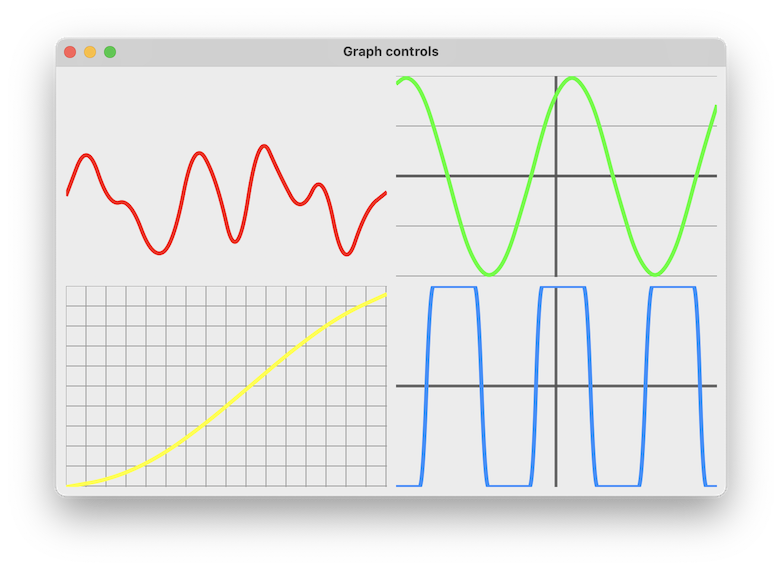

|
xtd
0.2.0
|
Loading...
Searching...
No Matches
graph_control.cpp
demonstrates how to create a custom control with xtd::forms::user_control control for create own graph.
- Windows


- macOS
- 

- Gnome

#include <xtd/xtd>
class signal_generated_event_args : public event_args {
public:
signal_generated_event_args(float sinus, const date_time& time) : signal_(sinus), time_(time) {}
float signal() const {return signal_;}
const date_time& time() const {return time_;}
private:
float signal_ = .0f;
date_time time_;
};
using signal_generated_event_handler = generic_event_handler<const signal_generated_event_args&>;
class signal_generator_base abstract_ {
public:
~signal_generator_base() {enabled(false);}
bool enabled() const noexcept {return enabled_;}
signal_generator_base& enabled(bool value) noexcept {
if (enabled_ == value) return *this;
enabled_ = value;
if (enabled_) generator_result_ = generator_.begin_invoke();
else generator_.end_invoke(generator_result_);
return *this;
}
const time_span& interval() const noexcept {return interval_;}
signal_generator_base& interval(const time_span& value) noexcept {
interval_ = value;
return *this;
}
event<signal_generator_base, signal_generated_event_handler> signal_generated;
protected:
void on_signal_generated(const signal_generated_event_args& e) {signal_generated(*this, e);}
virtual float next_signal() noexcept = 0;
private:
bool enabled_ = false;
time_span interval_ = 100_ms;
delegate<void()> generator_ {[&] {
while(enabled_) {
threading::thread::sleep(interval_);
on_signal_generated({next_signal(), date_time::now()});
}
}};
async_result generator_result_;
};
class random_signal_generator : public signal_generator_base {
protected:
float next_signal() noexcept override {return rand_.next(-1.0f, 1.0f);}
private:
static inline xtd::random rand_;
};
class sine_wave_signal_generator : public signal_generator_base {
protected:
float next_signal() noexcept override {
auto result = sinuses_[index_++];
if (index_ == sinuses_.count()) index_ = 0;
return result;
}
private:
const list<float> sinuses_ = {.0f, .38f, .71f, .92f, 1.0f, .92f, .71f, .38f, .0f, -.38f, -.71f, -.92f, -1.0f, -.92f, -.71f, -.38f};
size_t index_ = 0;
};
class max_min_signal_generator : public signal_generator_base {
protected:
float next_signal() noexcept override {
auto result = sinuses_[index_++];
if (index_ == sinuses_.count()) index_ = 0;
return result;
}
private:
const list<float> sinuses_ = {1.0f, 1.0f, 1.0f, 1.0f, 1.0f, 1.0f, 1.0f, 1.0f, -1.0f, -1.0f, -1.0f, -1.0f, -1.0f, -1.0f, -1.0f, -1.0f};
size_t index_ = 0;
};
public:
graph_control() {
double_buffered(true);
}
color signal_trace_color() const noexcept {return signal_trace_color_;}
graph_control& signal_trace_color(color value) noexcept {
signal_trace_color_ = value;
return *this;
}
float signal_trace_width() const noexcept {return signal_trace_width_;}
graph_control& signal_trace_width(float value) {
signal_trace_width_ = value;
return *this;
}
color grid_horizontal_line_color() const noexcept {return grid_horizontal_line_color_.value_or(back_color().is_dark() ? color_converter::light(back_color()) : color_converter::dark(back_color()));}
graph_control& grid_horizontal_line_color(color value) noexcept {
grid_horizontal_line_color_ = value;
return *this;
}
graph_control& grid_horizontal_line_color(std::nullptr_t) noexcept {
grid_horizontal_line_color_.reset();
return *this;
}
int grid_horizontal_line_spacing() const noexcept {return grid_horizontal_line_spacing_;}
graph_control& grid_horizontal_line_spacing(int value) {
grid_horizontal_line_spacing_ = value;
return *this;
}
bool grid_horizontal_line_visible() const noexcept {return grid_horizontal_line_visible_;}
graph_control& grid_horizontal_line_visible(bool value) {
grid_horizontal_line_visible_ = value;
return *this;
}
float grid_horizontal_line_width() const noexcept {return grid_horizontal_line_width_;}
graph_control& grid_horizontal_line_width(float value) {
grid_horizontal_line_width_ = value;
return *this;
}
color grid_vertical_line_color() const noexcept {return grid_vertical_line_color_.value_or(back_color().is_dark() ? color_converter::light(back_color()) : color_converter::dark(back_color()));}
graph_control& grid_vertical_line_color(color value) noexcept {
grid_vertical_line_color_ = value;
return *this;
}
graph_control& grid_vertical_line_color(std::nullptr_t) noexcept {
grid_vertical_line_color_.reset();
return *this;
}
int grid_vertical_line_spacing() const noexcept {return grid_vertical_line_spacing_;}
graph_control& grid_vertical_line_spacing(int value) {
grid_vertical_line_spacing_ = value;
return *this;
}
bool grid_vertical_line_visible() const noexcept {return grid_vertical_line_visible_;}
graph_control& grid_vertical_line_visible(bool value) {
grid_vertical_line_visible_ = value;
return *this;
}
float grid_vertical_line_width() const noexcept {return grid_vertical_line_width_;}
graph_control& grid_vertical_line_width(float value) {
grid_vertical_line_width_ = value;
return *this;
}
color x_axis_line_color() const noexcept {return x_axis_line_color_.value_or(fore_color().is_dark() ? color_converter::light(fore_color()) : color_converter::dark(fore_color()));}
graph_control& x_axis_line_color(color value) noexcept {
x_axis_line_color_ = value;
return *this;
}
graph_control& x_axis_line_color(std::nullptr_t) noexcept {
x_axis_line_color_.reset();
return *this;
}
bool x_axis_line_visible() const noexcept {return x_axis_line_visible_;}
graph_control& x_axis_line_visible(bool value) {
x_axis_line_visible_ = value;
return *this;
}
float x_axis_line_width() const noexcept {return x_axis_line_width_;}
graph_control& x_axis_line_width(float value) {
x_axis_line_width_ = value;
return *this;
}
color y_axis_line_color() const noexcept {return y_axis_line_color_.value_or(fore_color().is_dark() ? color_converter::light(fore_color()) : color_converter::dark(fore_color()));}
graph_control& y_axis_line_color(color value) noexcept {
y_axis_line_color_ = value;
return *this;
}
graph_control& y_axis_line_color(std::nullptr_t) noexcept {
y_axis_line_color_.reset();
return *this;
}
bool y_axis_line_visible() const noexcept {return y_axis_line_visible_;}
graph_control& y_axis_line_visible(bool value) {
y_axis_line_visible_ = value;
return *this;
}
float y_axis_line_width() const noexcept {return y_axis_line_width_;}
graph_control& y_axis_line_width(float value) {
y_axis_line_width_ = value;
return *this;
}
size_t signals_max_size() const noexcept {return signals_max_size_;}
graph_control& signals_max_size(size_t value) {
signals_max_size_ = value;
while (values_.count() > signals_max_size_)
values_.remove_at(0);
return *this;
}
void add_value(float value) {
values_.add(value);
if (values_.count() > signals_max_size_) values_.remove_at(0);
begin_invoke([self=this] {self->invalidate();});
}
protected:
void on_paint(paint_event_args& e) override {
user_control::on_paint(e);
e.graphics().smoothing_mode(drawing_2d::smoothing_mode::anti_alias);
auto x = .0;
auto step = as<float>(e.clip_rectangle().width) / (signals_max_size_ -1);
auto points = list<point_f> {};
for (auto value : values_) {
points.add(point_f(x, y - value * height));
x += step;
}
if (points.count() >= 2) e.graphics().draw_curve(pen {signal_trace_color_, signal_trace_width_}, points);
}
private:
void draw_grid(const rectangle& rect, drawing::graphics& graphics) {
auto grid_horizontal_line_color = grid_horizontal_line_color_.value_or(back_color().is_dark() ? color_converter::light(back_color()) : color_converter::dark(back_color()));
auto grid_vertical_line_color = grid_vertical_line_color_.value_or(back_color().is_dark() ? color_converter::light(back_color()) : color_converter::dark(back_color()));
if (grid_horizontal_line_visible_)
for (auto y = rect.top(); y < rect.bottom(); y += grid_horizontal_line_spacing_)
graphics.draw_line(pen {grid_horizontal_line_color, grid_horizontal_line_width_}, point(rect.left(), y), point(rect.right(), y));
if (grid_vertical_line_visible_)
for (auto x = rect.left(); x < rect.right(); x += grid_vertical_line_spacing_)
graphics.draw_line(pen {grid_vertical_line_color, grid_vertical_line_width_}, point(x, rect.top()), point(x, rect.bottom()));
}
void draw_axis(const rectangle& rect, drawing::graphics& graphics) {
auto x_axis_line_color = x_axis_line_color_.value_or(fore_color().is_dark() ? color_converter::light(fore_color()) : color_converter::dark(fore_color()));
auto y_axis_line_color = y_axis_line_color_.value_or(fore_color().is_dark() ? color_converter::light(fore_color()) : color_converter::dark(fore_color()));
if (x_axis_line_visible_) graphics.draw_line(pen {x_axis_line_color, x_axis_line_width_}, rect.left(), rect.top() + rect.height / 2, rect.width, rect.top() + rect.height / 2);
if (y_axis_line_visible_) graphics.draw_line(pen {y_axis_line_color, y_axis_line_width_}, rect.left() + rect.width / 2, rect.top(), rect.left() + rect.width / 2, rect.top() + rect.height);
}
list<float> values_;
color signal_trace_color_ = fore_color();
float signal_trace_width_ = 4.0f;
std::optional<color> grid_horizontal_line_color_;
int grid_horizontal_line_spacing_ = 20;
bool grid_horizontal_line_visible_ = true;
float grid_horizontal_line_width_ = 1.0f;
std::optional<color> grid_vertical_line_color_;
int grid_vertical_line_spacing_ = 20;
bool grid_vertical_line_visible_ = true;
float grid_vertical_line_width_ = 1.0f;
std::optional<color> x_axis_line_color_;
bool x_axis_line_visible_ = true;
float x_axis_line_width_ = 3.0f;
std::optional<color> y_axis_line_color_;
bool y_axis_line_visible_ = true;
float y_axis_line_width_ = 3.0f;
size_t signals_max_size_ = 48;
};
public:
static void main() {
application::run(form1 {});
}
form1() {
client_size({670, 430});
text("Graph controls");
generator1_.enabled(true);
generator1_.signal_generated += {*this, &form1::on_generator1_signal_generated};
generator2_.enabled(true);
generator2_.interval(20_ms);
generator2_.signal_generated += {*this, &form1::on_generator2_signal_generated};
generator3_.enabled(true);
generator3_.interval(200_ms);
generator3_.signal_generated += {*this, &form1::on_generator3_signal_generated};
generator4_.enabled(true);
generator4_.interval(50_ms);
generator4_.signal_generated += {*this, &form1::on_generator4_signal_generated};
graph_control1_.grid_horizontal_line_visible(false);
graph_control1_.grid_vertical_line_visible(false);
graph_control1_.location({10, 10});
graph_control1_.parent(*this);
graph_control1_.signals_max_size(16);
graph_control1_.signal_trace_color(color::red);
graph_control1_.size({321, 201});
graph_control1_.x_axis_line_visible(false);
graph_control1_.y_axis_line_visible(false);
graph_control2_.grid_horizontal_line_spacing(50);
graph_control2_.grid_vertical_line_visible(false);
graph_control2_.location({340, 10});
graph_control2_.parent(*this);
graph_control2_.signals_max_size(32);
graph_control2_.signal_trace_color(color::lime);
graph_control2_.size({321, 201});
graph_control3_.location({10, 220});
graph_control3_.parent(*this);
graph_control3_.signals_max_size(8);
graph_control3_.signal_trace_color(color::yellow);
graph_control3_.size({321, 201});
graph_control3_.x_axis_line_visible(false);
graph_control3_.y_axis_line_visible(false);
graph_control4_.grid_horizontal_line_visible(false);
graph_control4_.grid_vertical_line_visible(false);
graph_control4_.location({340, 220});
graph_control4_.parent(*this);
graph_control4_.signal_trace_color(color::dodger_blue);
graph_control4_.size({321, 201});
form_closed += delegate_ {
generator1_.stop();
generator2_.stop();
generator3_.stop();
generator4_.stop();
};
}
private:
void on_generator1_signal_generated(object& sender, const signal_generated_event_args& e) {
graph_control1_.add_value(e.signal());
}
void on_generator2_signal_generated(object& sender, const signal_generated_event_args& e) {
graph_control2_.add_value(e.signal());
}
void on_generator3_signal_generated(object& sender, const signal_generated_event_args& e) {
graph_control3_.add_value(e.signal());
}
void on_generator4_signal_generated(object& sender, const signal_generated_event_args& e) {
graph_control4_.add_value(e.signal());
}
random_signal_generator generator1_;
sine_wave_signal_generator generator2_;
sine_wave_signal_generator generator3_;
max_min_signal_generator generator4_;
graph_control graph_control1_;
graph_control graph_control2_;
graph_control graph_control3_;
graph_control graph_control4_;
};
startup_(form1::main);
#define startup_(main_method)
Defines the entry point to be called when the application loads. Generally this is set either to the ...
Definition startup.hpp:168
#define delegate_
The declaration of a delegate type is similar to a method signature. It has a return value and any nu...
Definition delegate.hpp:924
xtd::forms::style_sheets::control user_control
The user_control data allows you to specify the box of a user_control control.
Definition user_control.hpp:25
xtd::forms::style_sheets::control form
The form data allows you to specify the box of a form control.
Definition form.hpp:23
@ points
Defines points unit (1pt = 1/72 of 1in).
Definition length_unit.hpp:76
xtd::sptr< xtd::iasync_result > async_result
Represents the status of an asynchronous operation.
Definition async_result.hpp:19
@ start
Starting of a logical operation.
Definition trace_event_type.hpp:37
@ stop
Stopping of a logical operation.
Definition trace_event_type.hpp:39
@ point
Specifies a printer's point (1/72 inch) as the unit of measure.
Definition graphics_unit.hpp:25
@ height
Specifies that the height of the control is defined.
Definition bounds_specified.hpp:34
@ text
The xtd::forms::status_bar_panel displays text in the standard font.
Definition status_bar_panel_style.hpp:25
Generated on Sat Nov 8 2025 21:25:48 for xtd by Gammasoft. All rights reserved.